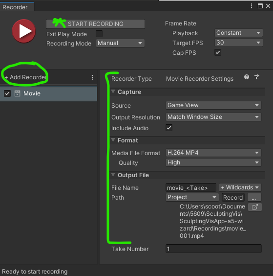

Do I know what I'm looking at?
Do I know where to look?
Isn't just a chronological progression, though
Only show one thing at a time
Good use of motion to keep things interesting and indicate where to look
Show overview of your visualization
What are we looking at?
(very brief) background on the data if necessary
Show a user achievement with tech 1
Interesting details about tech 1 implementation
Put your most impressive technique first!
Same as above
Save these for less impressive techniques
Include a sentance or two on future work
Summarize what you told the viewer already, and show quick clips to remind them
We'll do an abbreviated form of this today.
User discovered that the upper 1300 feet of the volcano were removed
User found the 4 types of sensors on the mountain.
This will be a "draft" video; does not have final vis.
Guiding principles, story?
If you mess up, can trim/delete
Recording narration w/Audacity
Based on your script [annotations]:
Unity Recorder, OBS (down arrow for details)
Check license before using!
Use sparingly / judiciously
Install: Window > Package Manager
Usage: Window > General > Recorder > Recorder Window
Can use OBS or another screen recording tool, as necessary. May be helpful to use "crop" feature of OBS.
Video editing w/OpenShot
If you want more features: Blackmagic Da Vinci Resolve
Look back at some of the video examples Prof. Keefe has shown from our lab!
The tech might sometimes be antiquated, but videos are (usually) good examples of the style we're looking for!
Look at the example video scripts and tips from our lab!
For Monday (last regular assignments!!):
Project Check-In 6 - Video Script
Dear Data 5 - Wizard of Oz prototype